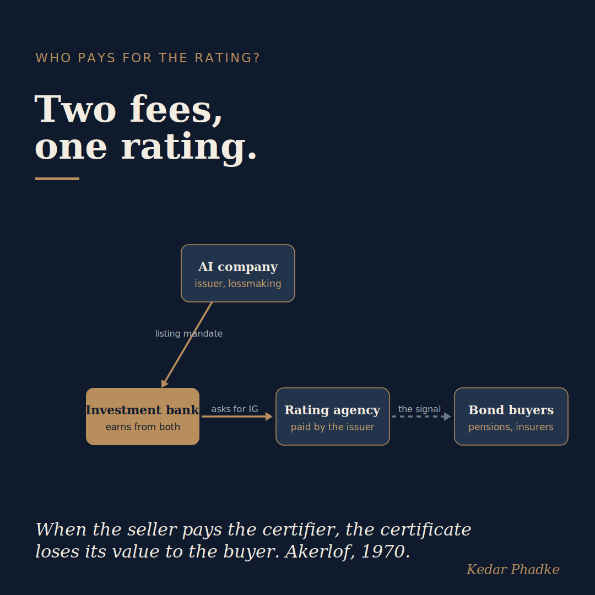

Who Pays for the Rating?
The Financial Times reports that Morgan Stanley and Goldman Sachs have asked Moody's, Fitch, and S&P to provide OpenAI and Anthropic with investment-grade credit ratings when they become public companies. Both firms are currently making losses. OpenAI recorded an operating loss of roughly $20.9 billion on $13.1 billion of revenue in 2025, and neither expects to achieve profitability before the end of the decade.
Most news reports focus on whether the agencies will agree to grant these ratings. However, that is not the most important question.
The Rating Is Not the Risk Assessment
Credit rating agencies use an issuer-pays model, meaning the company seeking the rating pays the agency to provide it. This is standard practice for nearly every corporate bond and is a recognised conflict of interest. What sets this situation apart is not the payment model itself, but the extra factors involved.

First, the banks requesting the ratings are also expected to underwrite the IPOs. They earn fees both from a successful public offering and from the debt sales enabled by a favourable rating. Both sources of income rely on a positive result. Second, and perhaps most significantly, the agencies are being asked to rate companies with no earnings history and operating in a business model with no historical precedent. Traditional rating methods were designed for firms with steady cash flows and established interest coverage, which these companies do not yet possess.
So the real issue is not that someone pays for the rating; someone always does. The problem is that there is no track record on which to base a credit assessment, and those requesting the rating stand to gain more if the outcome is positive.
What the Rating Would Actually Move
It is important to be clear about what an investment-grade rating means in this context. It is not simply a question of securing cheaper loans. For example, Nvidia has guaranteed up to $105 billion in lease obligations for OpenAI's data centre in Ohio, but that guarantee ceases once OpenAI attains a sufficiently high rating. Google and Broadcom have made similar commitments for Anthropic. Thus, the rating does more than grant access to the bond market. It transfers tens of billions of dollars in risk from these technology companies to those who purchase the bonds.
The buyers are a specific group. Investment-grade status is what allows pension funds, insurers, and endowments, which are institutions permitted to hold only higher-rated debt, to purchase these bonds in the first place. The rating is intended as an independent signal, enabling large investors with strict requirements to trust an asset without carrying out all the research themselves. That is its principal role in the system.
The rating does more than open the bond market. It shifts tens of billions of risk off the technology companies and onto whoever buys the bonds.
A Problem Akerlof Would Recognise
In 1970, George Akerlof demonstrated that when the party certifying a product's quality is paid by the seller, the certificate gradually loses its value for the buyer. The information flows in the wrong direction. His solution was independent verification by someone with no interest in the result, which the issuer-pays model cannot provide, particularly when the certifier has no track record for comparison.
There is a recent example as well as a historical one. When SpaceX received investment-grade ratings from all three agencies after its IPO earlier this year and raised approximately $25 billion in bonds, those bonds traded at almost junk prices within days. The market promptly adjusted the risk, revealing what the rating did and did not represent. The 2008 misrating of mortgage securities is a more significant precedent, but SpaceX is a recent case involving the same agencies and a similar type of company.
What This Means
If you are a trustee or chief investment officer with an investment-grade mandate, it is important to recognise the difference between a rating as a minimum requirement and a rating as a genuine credit assessment. The minimum may be valid, as it allows you to purchase the bond under your rules. However, for a company that has never made a profit and operates in a new type of business, the assessment behind the rating might not exist in the way your mandate assumes. The label permits your entry, but it does not reveal what is inside.
If you are studying finance now, this is not merely a textbook example. It is taking place at present, involving some of the world's most significant companies. The lesson is simple and enduring. Before placing trust in a signal, ask who paid for it, and whether the person issuing the rating had anything tangible to measure.
Here is a question for anyone on an investment committee or advising a fixed-income mandate. What would genuinely make you trust an investment-grade rating for a company with no profit history and no precedent? If those conditions cannot truly be met, what does your mandate's rating requirement really protect you from?
#InvestmentFinance #CreditRatings #AI #Markets #EconomicsThe anchor is independent financial journalism on a matter of public record, verified across multiple outlets, not a vendor or marketing source.
Sources
- Morgan Stanley and Goldman Sachs have asked S&P, Moody's, and Fitch to grant OpenAI and Anthropic investment-grade ratings effective at their planned listings, so that pension funds and insurers can buy their bonds despite current losses. Financial Times, 8 September 2026, carried by the Reuters wire and reported independently by Yahoo Finance and others. OpenAI's roughly $20.9 billion 2025 operating loss on $13.1 billion of revenue traces to the same reporting and is consistent with widely reported financials.
- Nvidia has guaranteed up to $105 billion of lease obligations for OpenAI's Ohio campus, and that guarantee ends once OpenAI secures a satisfactory credit rating (Nvidia regulatory filing, per the same coverage); Google and Broadcom provide comparable backing for Anthropic. SpaceX secured investment-grade ratings after its 2026 listing and raised about $25 billion in bonds, which then traded near junk pricing within days.
- George Akerlof, "The Market for 'Lemons': Quality Uncertainty and the Market Mechanism," Quarterly Journal of Economics (1970). The issuer-pays conflict is documented by the US SEC (2008) and the Financial Crisis Inquiry Commission (2011).
A version of this essay was first shared on LinkedIn.